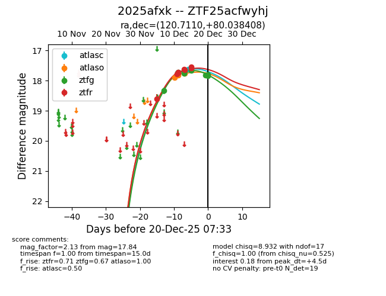
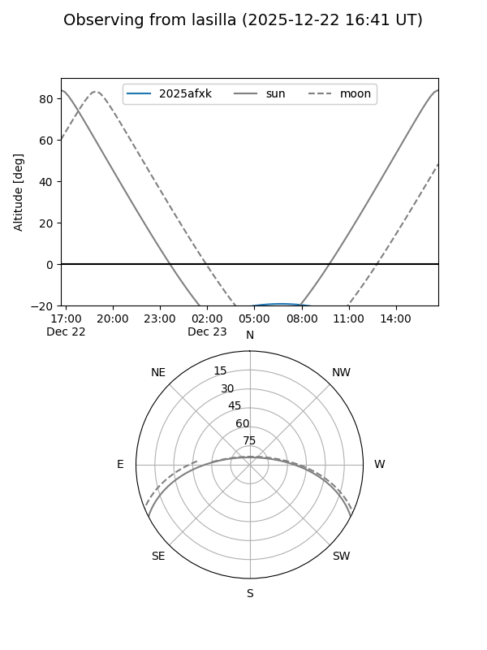
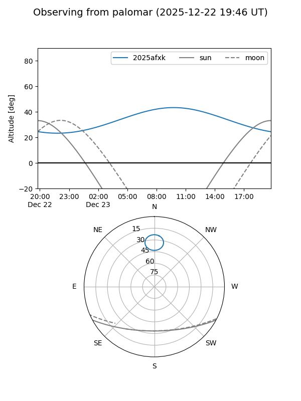
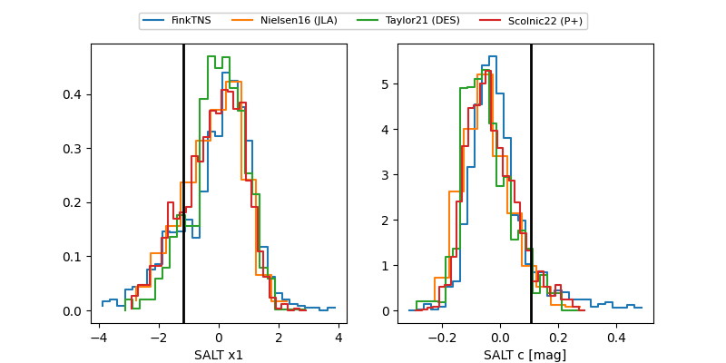

2025afxk
Target 2025afxk at 2025-12-22 18:46
Aliases and brokers:
FINK: fink-portal.org/ZTF25acfwyhj
Lasair: lasair-ztf.lsst.ac.uk/objects/ZTF25acfwyhj
ALeRCE: alerce.online/object/ZTF25acfwyhj
TNS: wis-tns.org/object/2025afxk
YSE: ziggy.ucolick.org/yse/transient_detail/2025afxk
alt names
ZTF25acfwyhj (ztf,fink_ztf)
2025afxk (tns,yse)
Coordinates:
equatorial (ra, dec) = 120.7110,+80.03841
equatorial (HMS+DMS) = 08:02:50.65,+80:02:18.27
galactic (l, b) = (133.8653,+29.75586)
Flags:
Photometry:
last atlasc=17.77, atlaso=17.76, ztfg=17.97, ztfr=17.81
2 atlasc, 3 atlaso, 13 ztfg, 13 ztfr detections
Lightcurve

Visibility


Additional plots
